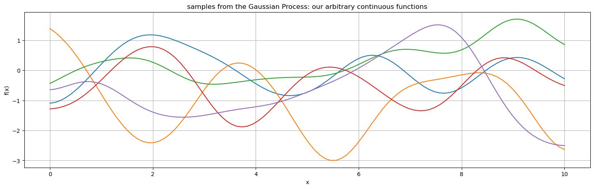
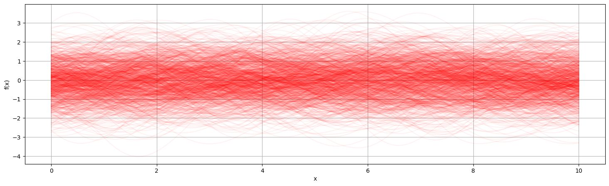
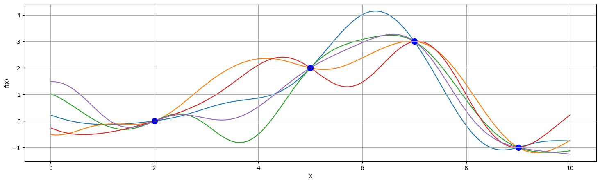
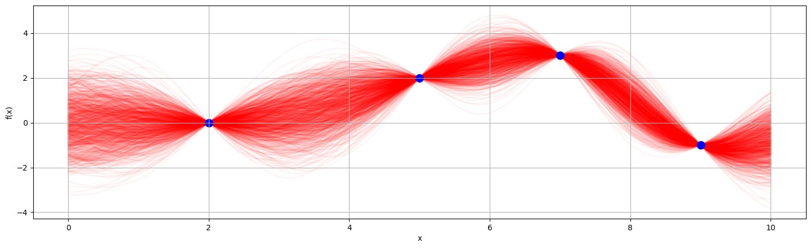
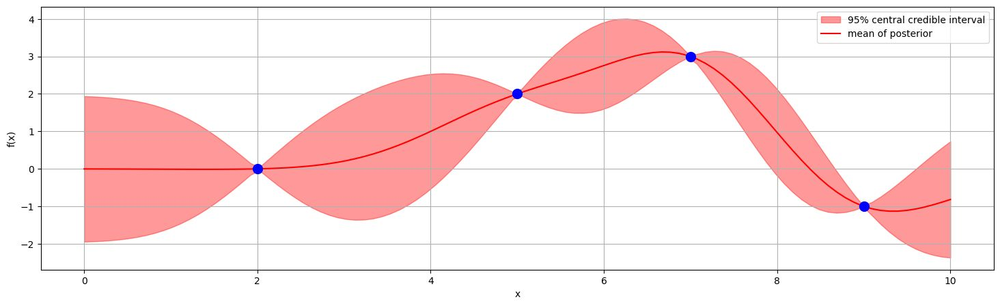
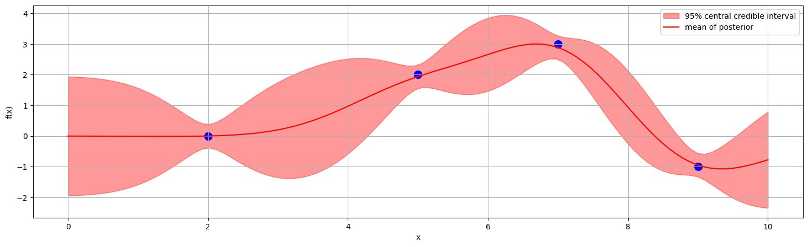

This is the fourth part in my Intro to Bayesian Optimization
- Optimization Intuitions
- The Bayesian Optimization Framework
- Intro to Bayesian Statistics
- Gaussian Processes
So far we have described the Bayesian Optimization framework, and have a basic understanding of Bayesian statistics. In BO, we have no knowledge about the function, so the model we use needs to be able to describe arbitrary continuous functions.
Gaussian Process regression is a nonparametric method to model arbitrary continuous functions given limited data. Sounds perfect for our situation. Most literature and implementations of BO use GPs for this reason. However the usefulness of GPs is wide-ranging, and the study of GPs is a large research area.
A change of perspective
Let’s say we have 5 data points. Each with an and a value. Let’s ignore the values for now and just think of our vector of values:
Now, we could think of it as 5 points in 1-dimensional space, but if we tilt our head, we could also interpret this as 1 point in 5-dimensional space.
What if all the data points in our infinite sample space are just a single point in infinite-dimensional space, With every possible point corresponding to its own dimension?
The Gaussian Process
Gaussian Process regressions take this perspective, then define a Gaussian distribution over this infinite-dimensional space, which we call our function space. A point in function space now corresponds to a realization of the data (a function) in our original data space. We pick a Gaussian Process as the prior distribution over the function space.
The specific definition is that a Gaussian Process is any (possibly infinite) collection of Random Variables, such that any finite collection of them have a joint Gaussian distribution. So here we define a GP over infinite-dimensional space, and any finite subset (e.g. our data points) is also Gaussian in its joint distribution.
Note that we are not saying that our values are gaussian with respect to the values. We are saying that the values themselves fall out of a Gaussian distribution with respect to each other. This will become clearer when we visualize the prior.
Kernels
Now think about what it means for a function to be continuous, it means an arbitrarily small change in our variables would result in a bounded change in our variable, i.e. a small change is a small change. We can encode this in our new space by saying that if our change in between two points is small, the correlation in the corresponding dimensions of the function space is large because the values should be similar. We call this mapping of distance of two points to covariance a kernel where and are two points.
A common kernel is the radial basis function (RBF) aka the exponentiated quadratic kernel:
When and are close, goes to 1, as they go far away, goes to 0. Note this works for any number of dimensions of explanatory variables. We actually include two hyperparameters into the RBF for tuning, controls the amplitude and controls how fast covariance drops off:
There are many other reasonable choices of kernel you can use depending on what you know about the function you are approximating (e.g. if your function is periodic and you want to encode that). Read more
So if we some response variable vector and some explanatory variables , then our prior distribution for is the Gaussian Process:
We may choose the mean not to be 0, but some function in practice. But knowing nothing else about the function, f(x), a mean of 0 is a reasonable choice.
Sampling the prior
So now we have a distribution that describes our function space. Remember, our reasoning here was to find a pretty general way to model arbitrary continuous functions. If we were going to sample a point, what would the function look like?

The Gaussian part of Gaussian Processes refers to these wiggly curves. Note they are not shaped as Gaussians; we are not saying that the function has a Gaussian shape, we are saying that the points of the function are a priori one sample from an infinite-dimensional Gaussian distribution with a covariance described by the kernel. Some wiggly curves are more likely than others, note how all of these ones centre around 0, that is because of our choice of mean of the GP. The probability of the curves is Gaussian, and that’s what gives them their arbitrary continuous (wiggly) shape.
Consider the earlier example of Bayesian linear regression. That was in a sense Gaussian too, as we said our two parameters came from a joint normal distribution. Same thing here, except instead of parameters, we consider all infinitely many points on the real number line.
Visualizing the prior
We can take the limit of the number of samples and overlay them to visualize the probability distribution of the prior at each point .

Posterior
We start with a very useful theorem. If we have a Gaussian Process, then by definition the joint distribution of any two subsets of the GP are also Gaussian. And it turns out the conditional distribution of Gaussians is also Gaussian.
Specifically, if you consider two subsets of random variables of a Gaussian Process, and
then
where
So if we have observed data , and want to calculate the posterior for prediction points , we have prior:
where
then we have the posterior:
Note that doesn’t need to come from a small or even finite set, it can be the entire infinite-dimensional space which is equivalent to every point on the number line.
Sampling the posterior
Sampling a few times

Sampling many times

As we have a closed form solution for the posterior (one of the nice things about GPs), we can visualize it without sampling. Just specify your level of credibility.

Noisy observations
Say instead we have , where measurements have error
Then the prior covariance matrix of the data points is
and we can just replace this in the earlier process.
Note that this gives the posterior distribution, i.e. the distribution for the noiseless function, not the predictive distribution for future measurements which will need to have noise added.
In the noiseless case, we called the posterior, but that was just because of the special case where

Prior on the functions? Where are the parameters?
In the linear regression case, we defined a prior of the parameters, not the functions that they create. Here, we set the prior on the functions directly:
That is because Gaussian Process regression is a nonparametric method. This is a catch-all term for any model that doesn’t use specified models with parameters that can be optimized — including histograms, decision trees, and some support vector machines. However, often when we use this term, what we are actually considering is infinitely many parameters.
With a GP, the complexity of the model (i.e. its number of dimensions) increases with the number of data points. Contrast this with linear regression where complexity increases with the number of explanatory variables. Scaling complexity with the number of data points has a huge advantage in low data models. Consider a linear regression, where our fit can be characterized just by the coefficients. No matter how many data points we have, in a one-dimensional case, we can compress the information of the model down into an intercept and coefficient term. However, with GPs, we are never compressing/losing information, in a sense, we are maximally leveraging the data we have available.
The flip side of this is that GPs are computationally constrained to low data regimes. We have won statistical efficiency at the expense of computational efficiency. Practically speaking, we must calculate the inversion of the Kernel matrix of the observed data , which is an expensive operation where is the number of data points. Compare this with a linear regression where we must calculate which is an operation, where is the number of parameters. With GPs we are constrained to working at about 10,000 data points given modern tooling. However, this is fine for Bayesian Optimization where we don’t have so many data points. Also, we do not require this model to be computationally performant, as most time should be spent in function evaluation, i.e. performing experiments. It’s ok for modelling to take a few minutes if the time between experiments is a few hours.
Hyperparameter selection
We have introduced 3 hyperparameters. The kernel has terms and , and with noise we introduced . A common method used to pick these is to maximize the marginal likelihood which can be done through gradient methods.
However, there are arguments to be made in the context of Bayesian Optimization that we don’t want to find optimal model hyperparameters, as we may want to err on the side of overestimating the kernel variance so we don’t get stuck in local minima through the iterative process.
Summary
We want to find the combination of values that gives us an optimal value, where . is a black box we can sample, but we cannot sample its derivatives. Sampling is expensive so we want to minimize the number of samples we take.
The approach we take is to create a probabilistic (Bayesian) model of the function with the data we have, then find the right balance of exploration and exploitation to pick the next point to sample (maximizing the acquisition function).
We use a Gaussian Process for this probabilistic model, because it can model arbitrary continuous functions, and is powerful in low data regimes.
- Start with some initial sample measurements
- Fit a Gaussian Process to the data
- Compute the acquisition function based on the GP
- Find that maximizes the acquisition function
- Sample and add to your data
- If time/resources are remaining, go to step 2